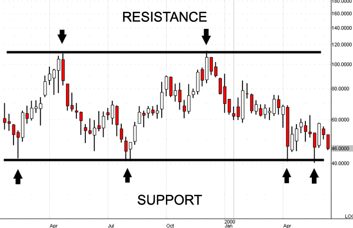

Technical analysis is the use of charting and indicators to predict the future movement of a ticker, currency, or index.
There are many different ways to chart, but the overall goal is to identify patterns that have the highest probability of continuing into the future. A common strategy is to look for resistance and support. Support is a price that if a ticker falls to, many people and algorithms will buy it, causing the price to not fall below that level. Resistance is a price that if the ticker rises to, many people and algorithms will sell the stock, causing the price to lower due to increased selling volume. Traders use support and resistance in order to gage when they should buy/sell a position. A trader may buy into a position if they see a ticker bounce off of its support, as the trader believes the ticker is not going to fall below that support, so being bullish is safer. Breaking resistance/support also helps traders the direction of a stock. If a ticker breaks through resistance, that is a very bullish sign as the increased selling pressure that comes with being at a level of resistance wasn't enough to stop the rise of the stock.
In the above example, there is a level of resistance between 100,000 and 120,000 and a level of support just above 40,000. An investor, knowing that this ticker had bounced off the support in the past, could choose to buy in right after the stock bounces off support as, judging from the past, there is a high probability of this working. In this case, the support and resistance was formed over a period of multiple months, but support/resistance can be formed on any time frame, whether it be intraday or over decades. Overall, charting these levels is very helpful for an investor to know when to enter and exit a position.
Indicators are tools that help investors predict the future movement of a ticker based on an equation. Most indicators are created because people saw patterns and worked backwards to find indicators that predicted the movement. There are many indicators, RSI, MACD, and 50 day MA being a few examples. All indicators are found using different methods, but they all serve the same purpose of helping investors make better choices. While by themselves indicators are not enough to sway an investor's view on a stock, many indicators pointing to the same conclusion can make it obvious to an investor that a trend is forming.